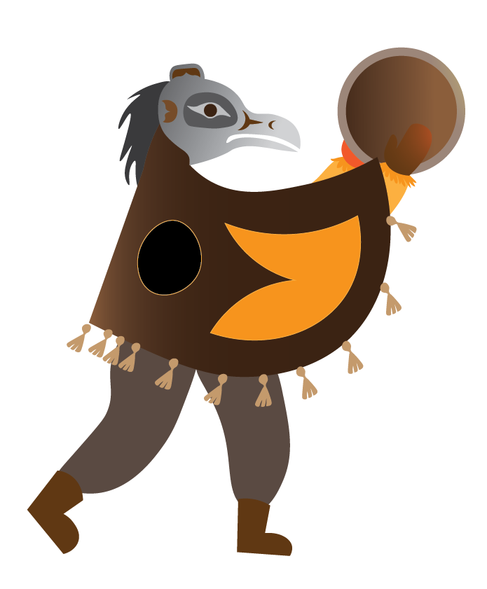
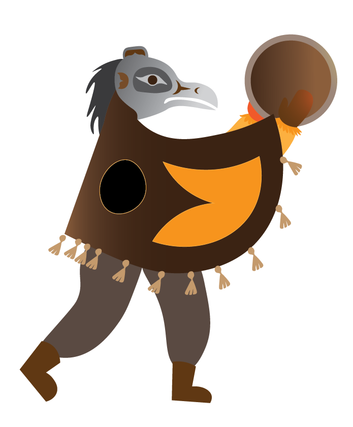

Video + Staff interview : Jackie
Youtube VideoContext
The last video covering VACFSS adminstration was 2 years ago. This video hopes to showcase the day in the life of a social worker in the childsafety department. With the goals to not only showcase how the department is structure, how restortive practice working with Indigenous children is implemented, but also a inner look of how working for a non-profit childwelfare agency is like.
My role
As the PR and Communciations Assistant, I worked with the Associate to film, edit, and coordinate the approval process when my supervisor left the agency.
Intial Idealization


Indigenous Mythology
I chose to include the Thunderbird, the men in the woods,the Engel,and the raven.
 



Final Design

Challenge
As an adminstrative worker, and non-Indigenous person, I needed to be careful in filming, and later editing to inlude/protray the day inthe life of a social worker as honestly and factually as possible. Hence the video was completed in 2023, but took another 3 months of approval from the directors, and CEO to be released on the offical website and Youtube Channel.
Impact
Due to the dely for approval, I initiated an interview with Jackie, and planned the social meida release as part of the social worker week.
Conclusion
As of recenty, the video has gather over 140 view, supported our VACFSS traffic by 100%